Fedora Administrator is the direct link to API-M functionality for repository administrators. Using this tool it is possible to ingest, search for and retrieve, modify and purge data objects and build, search for and retrieve, modify, and purge behavior objects (Behavior Definitions and Behavior Mechanisms).
navigate to the $FEDORA_HOME/client/bin directory
fedora-admin [hostname] [port] [user] [pass]
For example, fedora-admin localhost 8080 fedoraAdmin fedoraAdmin will start the GUI for a server running on the local machine, port 8080, where "fedoraAdmin"has been used both as the name and password of the server administrator.
Added in the 2.1b release of Fedora is the authentication dialog. When you start Fedora Administrator, you will be asked to choose the server to which you wish to connect, the protocol you wish to use to connect to your Fedora repository (http or https), your username and password. The server and username fields are pre-populated and the password is validated using values from fedora.fcfg
Fedora Administrator has been designed with standard GUI based menus. The following menus are available in the Fedora Administrator window:
Builders
Window
Help
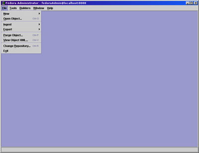
Commands on the file menu allow a repository administrator to perform operations on objects in the repository or to log in to a different repository.
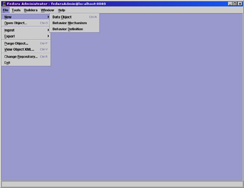
The New menu option allows users to build new Fedora objects from pre-existing component parts. When the New...Data Object option is selected a skeletal Fedora data object is ingested into the repository and the repository administrator/object owner then completes the object by defining a Behavior Definition and Behavior Mechanism for the object, adding datastreams, and finally binding disseminators and datastreams together.
Users may also create behavior definition and behavior mechanism objects by selecting these submenu options. The complex task of building WSDL objects dictated the necessity of onscreen, context sensitive help screens for these builders. Clicking the Help button on any pane in the Behavior Definition Builder or Behavior Mechanism Builder will open a popup help screen defining each field in view.
This section provides instructions for building a new data object using Fedora Administrator.
On the File Menu, select New.
From the New submenu, select Data Object.
The New Object Dialog appears.
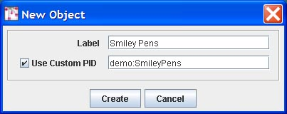
Fill in the label data for the object and the content model to which the data object subscribes. If a custom PID is desired, click the check box and fill in the PID value.
Clicking Create causes a Fedora data object to be created and ingested into the repository. The new object is displayed in a tabbed pane showing the following tabs: Properties, Datastreams, and Disseminators.
Click the Disseminator tab to bring that pane to the front. On this tab, the user must
Fill in the Disseminator Label
Select a Behavior Definition from the drop down menu
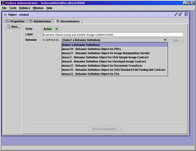
Once the Behavior Definition has been selected, the pane will display a list of methods available for and parameters required by the Behavior Definition, and the Behavior Mechanism drop down menu will appear.
Select a Behavior Mechanism from the drop down menu
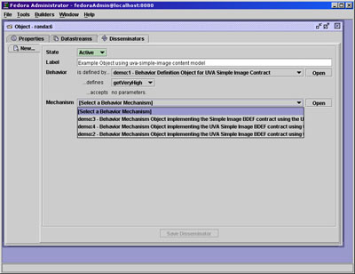
The values in the menu are pre-populated based on the Behavior Definition chosen in the previous step. Once the Behavior Mechanism is selected, the Bindings tabs are shown for each method required by that Behavior Definition/Behavior Mechanism pairing.
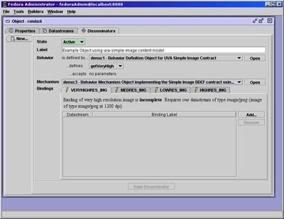
Click on the Datastreams tab
The display will show a side tabbed pane displaying all datastreams currently in the object. All Fedora data objects contain a Dublin Core metadata datastream after ingest. The user will wish to edit this metadata, adding fields as appropriate for the data object in question.
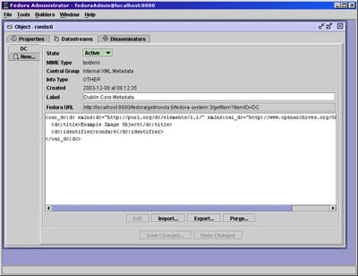
Click on the New side tab
Fill in the label for the datastream, select the MIME type
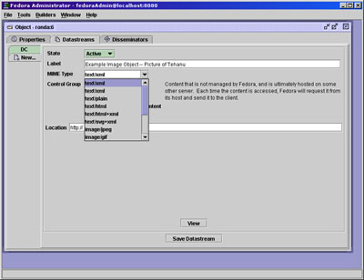
Select the Control Group. Clicking through the control group options will show text defining each control group option.
If the datastream is Internal XML Metadata, select the classification from the drop down menu (descriptive, digital provenance, source, rights, or technical). The user may enter text directly into the editing window or data may imported from a file by clicking Import and selecting or browsing to the location of the XML metadata file. Click Save to save the datastream to the object.
If the datastream is Managed Content, click Import and select or browse to the file location of the import file. Once import is complete, click Save to save the datastream to the object.
If the datastream is External Referenced Content, fill in the Location URL and click Save to save the datastream to the object.
If the datastream is Redirect, specify the redirect URL in the Location text box and click Save to save the datastream to the object.
Once all datastreams required have been created and saved, you must bind the disseminators and datastreams together.
Click on the Disseminators tab
For each Binding required by the Behavior Definition/Behavior Mechanism Contract, the user must select a datastream.
Click on the Binding tab to be defined. Click the Add button.
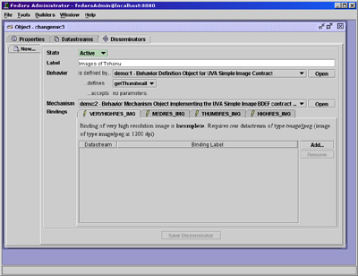
From the New Binding dialog, select the datastream from the drop down menu which matches the Binding to be completed. Click OK.
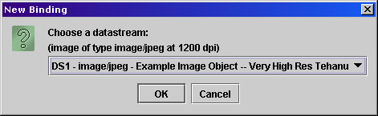
Repeat for each binding/datastream pair. When all Bindings are complete, the Save Disseminator button will be active. Click to save the Disseminator. Your new object is now complete.
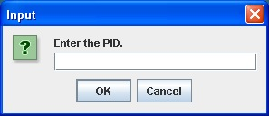
The Open menu requires input of an object PID for retrieval of the object. Upon retrieval, the object is displayed on two tabbed panes.
Object Properties Pane
The default first pane is the Object Properties pane. On this pane the state and label of the object may be modified. Creation and modification dates are shown, along with the content model to which the object subscribes and the owner of the object.
Object States
Active: the object is freely available to all users.
Inactive: the object is only available to repository administrators.
Deleted: the object has been marked for permanent removal from the repository, pending review by repository administrators.
Also available on this pane is the ability to view the object's XML, export the object to a file, or purge the object from the repository.
Viewing XML: From this window, the XML of the object can be viewed, but cannot be modified.
Export Object: If Export is selected, the user will be prompted for a file name and location to which to write the XML file. The format for exported objects is fedora:mets.
Purge Object: Purging an object completely removes it from the repository. Upon selecting the Purge option, the user will be prompted to enter a reason for the object's removal. Please note that objects with dependencies in the repository cannot be purged. WARNING: There is no "Are you sure" dialog with this option and the purge cannot be undone.
The Datastreams Pane
On the Datastreams Pane, the state of each datastream in the object can be modified, along with the datastream label and location. The MIME type of the datastream is shown, along with the control group, info type, create date, and the Fedora URL of the object.
Datastream States
Active: the datastream is freely available to all users.
Inactive: the datastream is only available to repository administrators.
Deleted: the datastream has been marked for permanent removal from the repository, pending review by repository administrators.
From this pane, users may additionally request to view a datastream, add a new datastream to the object, export a datastream's contents, or purge the datastream from the object.
Please note that datastreams which are linked to active disseminators may not be purged.
If a datastream has a text MIME type (e.g., text/xml, it may be edited in place by clicking the Edit button and making the desired changes in the editing window. A user may also choose to import new data by clicking the Import button or to export the data contained in the datastream by clicking the Export button. If the datastream is not linked to an active disseminator, it may be purged from the object. Note: Purge is not valid for the DC metadata datastream because it is always linked to the default disseminator.
If Import is selected, the user is prompted for a file name or url where the the import file is located.
If Export is selected, the user is prompted for a file name and location to which to write the XML file of the datastream content.
If Purge is selected, the user is warned that the operation is permanent and must click "Yes" to continue. If "Yes" is selected, the datastream is immediately purged from the object.
Only datastreams with a text MIME type may be edited. Datastreams with other MIME types (e.g., image or application, e.g., image/jpeg or application/pdf may only be viewed, exported, or purged from the object.
When selecting to ingest objects from the File menu, users have the option of ingesting a single object or multiple objects.
Objects may be ingested from a file or from another repository.

Choosing Ingest One Object from File, the user is prompted to select the file name from a dialog box or browse to the location of the file on the local drive(s) for the file to be ingested. Clicking Open will cause the file to be ingested. If the repository has been set to retain PIDs on ingest in fedora.fcfg, the PID in the object XML will be maintained. Otherwise, the PID will be overwritten.
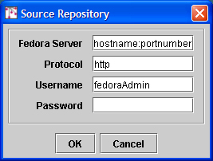
Choosing Ingest One Object from Repository causes the Source Repository dialog box to appear. The user must fill in the hostname: port of the source repository, the protocol (http or https) and enter a username and password. Clicking OK initiates the Input dialog, where the user is prompted for a PID value. Clicking OK on the Input dialog completes the object ingestion.
Users may also ingest all the files in a directory or all the files of a specific object type in a repository by selecting the Ingest Objects by Type submenu item.
Upon selecting Ingest Objects By Type from File, a dialog box prompts the user to select or browse to the directory containing the objects to be selected. Once the directory has been identified, clicking Open will activate a second dialog box which prompts the user to select the type of object to be ingested behavior definition, behavior mechanism, and/or data object.
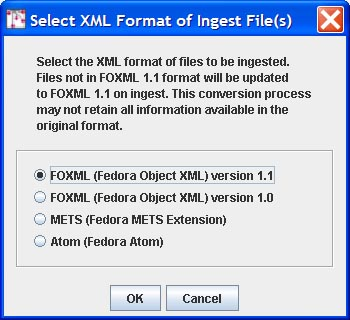
If you choose to separate your objects by type into separate directories for ingestion, please remember that the behavior objects to which a data object are bound must exist in the repository before the data object can be ingested. Order of ingestion must be
Using the Ingest Objects by Type from File submenu allows users to place all objects in a single directory, and the Fedora software will ingest the objects in that directory in the proper order.
If the repository has been set to retain PIDs on ingest in fedora.fcfg, the PID in the object XML will be maintained. Otherwise, the PID will be overwritten.
Choosing Ingest Objects by Type from Repository causes the Source Repository dialog box to appear. The user must fill in the hostname: port of the source repository, and enter a username and password. Clicking OK causes the Select Object Type dialog to appear. Selecting the types of objects to be ingested from the source repository--behavior definitions, behavior mechanisms, or data objects--and clicking OK initiates ingestion of all objects of that type from the source repository.
During ingest, the status bar at the bottom of the Fedora Administrator window shows the activities of the server. Once ingest is complete, a summary pane will appear giving counts of objects successfully ingested, objects failed, and time elapsed. Click OK to clear this message. The View Ingest Log dialog will then open. The user may click Yes and view the detailed log file or No to view the file at a later time. The log file is created in the $FEDORA_HOME/client/logs/ directory.
Users have the option of exporting a single object or exporting objects by type.
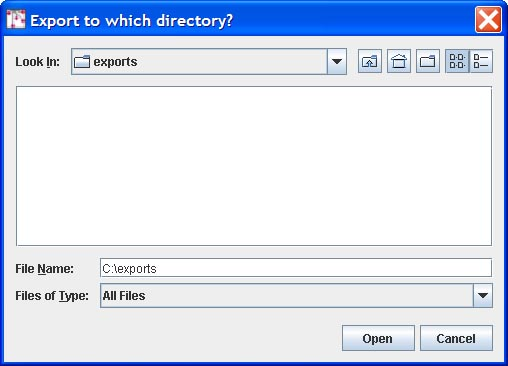
When the Export One Object option is selected, the user is prompted to select a directory to which the export file will be written. Clicking Open causes the user to be prompted for an object PID and when OK is clicked, the file is exported to the selected directory. The file is named pidvalue.xml.
When the Export Object by Type option is selected, the user is prompted to select a directory to which the export files will be written. Clicking Open causes the user to be prompted for which type of object is to be exported--behavior definitions, behavior mechanisms, or data objects. The default selection is data objects. When the file types are selected and OK is clicked, the system searches for and retrieves all objects of that type, which are then exported to individual files in the destination directory. The files are named pidvalue.xml.
Purging an object completely and permanently removes it from the repository. Upon selecting the Purge option, the user will be prompted to enter an object PID and a reason for the object's removal. Please note that objects with dependencies in the repository cannot be purged. WARNING: There is no "Are you sure" dialog with this option.
This menu option allows a user to view the xml, but not edit. XML may be cut and pasted into another application using standard keyboard commands of the host operating system, (e.g. CTL-C, CTL-V in Windows) if desired.
The Change Repository option allows a repository administrator to login to a different Fedora repository. When selected, this menu option causes the Login dialog to be displayed. The repository administrator may then select a different Fedora server with which to connect, entering the appropriate login name and password.
The Exit menu option closes all connections with the Fedora server instance and logs the user out of the repository.

Commands on the Tools menu provide the user with the ability to search and retrieve objects from the repository, build and ingest batches of digital objects, and under the console submenu, gain access directly to API-M and API-A methods for testing purposes.
The Search/Browse Repository menu option provides a mechanism for searching and retrieving objects from the Fedora repository. Upon ingestion, metadata from the Fedora System Metadata section and the Dublin Core (DC) Metadata section of the object are indexed in a relational database, and may be searched using this menu option. The DC Metadata section is an optional Implementer-Defined XML Metadata datastream in the object, where the Datastream ID is DC, and the XML conforms to the schema at http://www.openarchives.org/OAI/2.0/oai_dc.xsd. If a Dublin Core metadata datastream is not provided, Fedora will construct a minimal DC datastream consisting of the elements dc:title and dc:identifier. The value for dc:title will be obtained from the object's label (if present in the object) and the value for dc:identifier will be assigned to the object's persistent identifier or PID.
The search interface provides both simple and advanced searching. All queries are case insensitive. Simple Search enables queries of words and phrases occurring anywhere in than object's indexed metadata fields. Advanced Search enables fielded searching across any combination of metadata elements using string comparison operators ( = and ~ ) for string fields, and value comparison operators ( =, >, ≥, <, ≤ ) for date fields (dc:date fields may be treated as both). The wildcards, * and ? may be used in any string-based query.
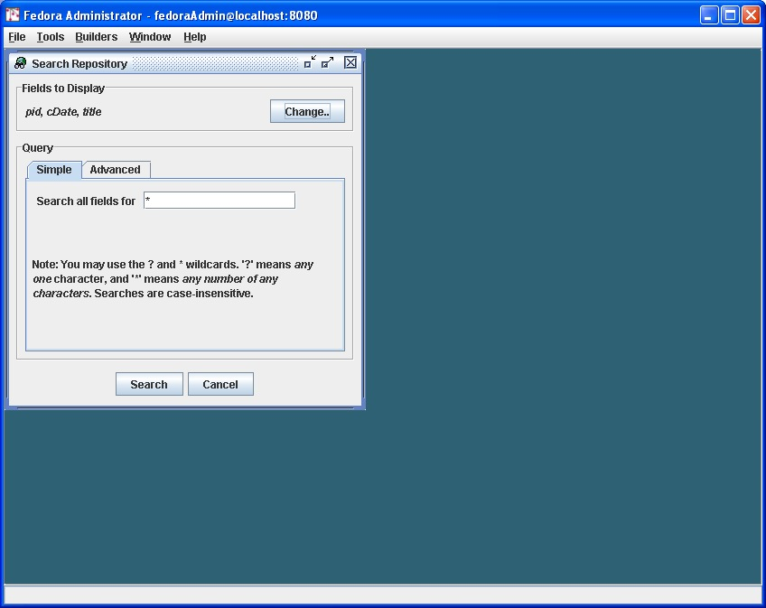
The Simple Search tab is the default selection in the Search Repository window. The Simple Search query searches both the Dublin Core metadata and the Fedora System Metadata fields.
At the top of the Search window, the user may select fields to be displayed by clicking the Change button and selecting/deselecting field names from the dialog.
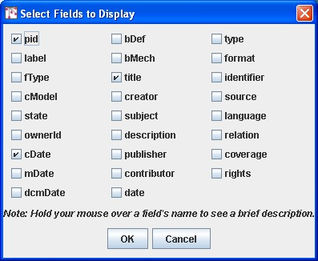
The Simple Search searches all indexed metadata fields for the text entered into the text box. All searches are case insensitive. The wildcard character '*'; can be substituted for any string of characters. The wildcard character '?'; can be substituted for any single character. Clicking Search will retrieve a list of objects where the entered text string appears in an indexed metadata field.
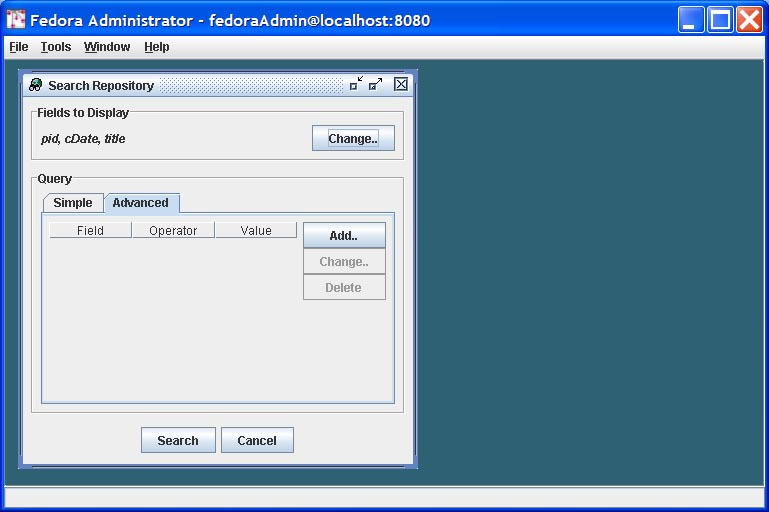
The Advanced Search query enables users to refine their repository search by searching specific fields for specific values provided in the query.
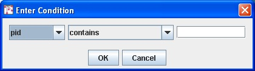
The search conditions can be modified by clicking the Add button, which opens the Enter Condition dialog. The user selects the field to be defined from the drop down menu, selects the condition to be matched, and enters the text to be matched, if appropriate. Clicking OK saves the condition. Once all conditions are entered, clicking Search will retrieve a list of objects in which all conditions are met.
The Search Results Window displays the results of a successful search in a table format. Across the top of the table are a row of labels of the fields that have been returned from the objects meeting the search criteria. Double clicking anywhere on a row opens that object. Right clicking anywhere on a row opens a pop-up menu that contains object level tasks from which the user may select. These tasks include Open Object, View Object XML, Export ..., Purge, and Set Object State To. If Set Object State To is selected, a submenu will provide the user with valid states from which to select.
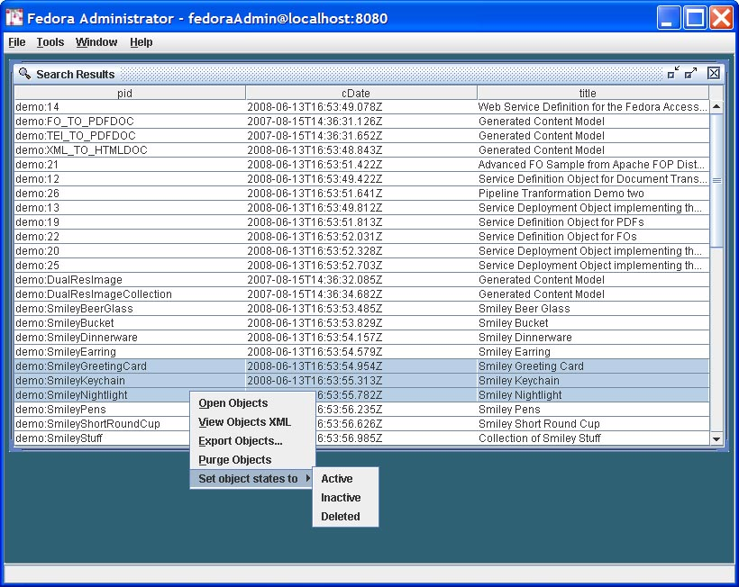
The Purge and Set Object State To submenu options can be used on multiple objects by using mouse clicks or the equivalent keyboard commands to multiselect rows in the Search Results Window. In this way, groups of objects can be purged from the system, or have their states changed by means of one search and retrieval operation.
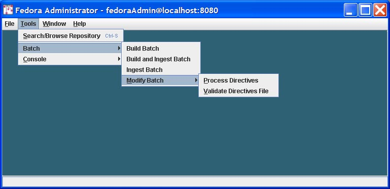
The Batch menu item includes tools to create and ingest multiple Fedora objects, which are FOXML documents or Fedora-specific METS documents contained in files outside the repository. The Batch Modify tool is also included here and allows users to modify batches of already-ingested Fedora objects.
It's simple to ingest objects created by one-up edit or by custom scripting.
The Batch menu also supports building objects. This takes a general template common to all objects in a batch and makes object-specific substitutions into the template. The template can be either a Fedora METS XML document or a Fedora FOXML document and contains data common to the objects of the batch. Separate XML documents hold the per-object substitution values. The format of the template (FOXML or METS) determines the format of the built objects.
The relatedness of objects in a batch is defined by what Fedora Administrator allows to be substituted and by which substitutions you choose to make. Data from the template are retained, unless replaced per individual object, including XML comments.
Fedora Administrator provides for three modes of object batch processing: batch build, batch ingest, and a combined batch build and ingest.
This phased processing is shown in the following diagram.
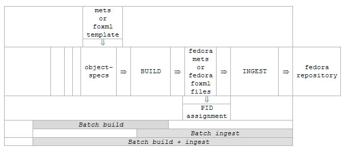
Build a set of Fedora METS XML or Fedora FOXML XML files from a common Fedora METS or Fedora FOXML template and simple (non-METS) XML object-specs. The resulting objects are then ready for ingesting into Fedora.
Select Tools on the Fedora Administrator menu bar, select item Batch and then Build Batch.
This will open a Batch Build window. You may need to adjust this window's size to see its controls. Use the browse buttons to enter the four required settings. Clicking on a browse button opens a standard directory/file selection dialog.
Then click the Build this batch button to build the batch of Fedora METS or Fedora FOXML XML documents.
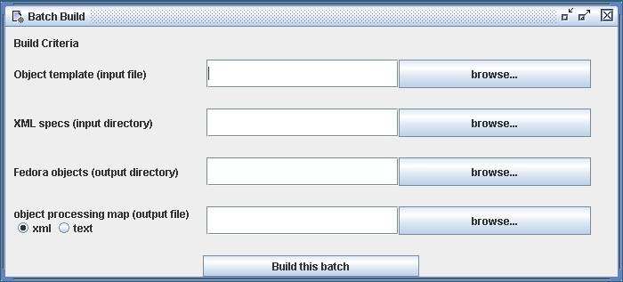
A confirmation dialog will open requesting confirmation of the object template selected. Clicking Yes will continue the batch build. Clicking No or Cancel will return the user to the Batch Build window.
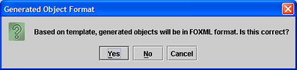
A second (output-only) window will open to show progress. You can build multiple different batches before closing the Batch Build window.
You can then ingest the created batch as described elsewhere in this document.
No subdirectories or files are deleted by Fedora Administrator. Setup and cleanup of the files in the batch must be done by you using standard operating systems facilities.
You can use files and subdirectories of directory client/demo/batch-demo, relative to your FEDORA_HOME environment variable. (When you create your own batches, the needed directories and files can be anywhere in the file space of the system on which you are running Fedora Administrator or command-line BatchTool.)
Use file mets-template.xml for METS template (input file) if you want to build METS objects.
Use file foxml-template.xml for FOXML template (input file) if you want to build FOXML objects.
Use subdirectory object-specifics for XML specs (input directory); this is a directory holding (all and only) per-object data.
Use subdirectory objects for the built objects (output directory); this is a directory to hold (all and only) Fedora object files built by Fedora Administrator. The format of the built files will be determined by the type of template used (METS or FOXML).
Specify a file path of your choice for object processing map (output file); this is a file which maps object-specs to objects built. See the section on object processing maps, elsewhere in this documentation. Note that PIDs cannot be reported in this (Batch Build) mode, as they have not yet been assigned.
Optionally select the output format for object processing map, either xml or text (xml is the default format).
Create a set of Fedora objects in your repository from a corresponding set of Fedora METS XML or Fedora FOXML XML files.
Select Tools on the Fedora Administrator menu bar, and select item Ingest Batch.
This will open a Batch Ingest window. You may need to adjust this window's size to see its controls. Use the browse buttons to enter the two required settings. Clicking on a browse button opens a standard directory/file selection dialog.
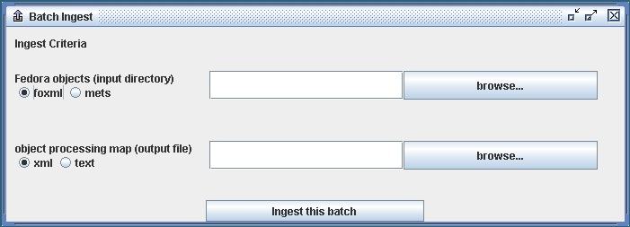
You must also indicate the format of the objects to be ingested by selecting either the foxml or mets radio button. Then click the Ingest this batch button to ingest the batch into your Fedora repository.
A second (output-only) window will open to show progress. You can ingest multiple different batches before closing the Batch Ingest window.
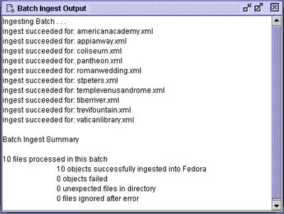
No subdirectories or files are deleted by Fedora Administrator. Setup and cleanup is by using standard operating systems facilities. Fedora Administrator does not itself validate on Batch Build, but batch ingest into Fedora does. The batch fails on the first individual object ingest failure.
Fedora will not ingest a METS file whose METS:xmldata elements are empty or contain non-tagged character data.
You can use files and subdirectories of directory client/demo/batch-demo, relative to your FEDORA_HOME environment variable. (When you create your own batches, the needed directories and files can be anywhere in the file space of the system on which you are running Fedora Administrator or command-line BatchTool.)
You will need to have already done a Build Batch demo, explained elsewhere in this document, to populate the objects directory needed in this current demo. If you have ingested these objects before, either in this Ingest Batch mode following a separate Build Batch mode, or in a Build and Ingest Batch mode, you will first need to edit OBJIDs in the object-spec files, or to remove the corresponding objects from your Fedora repository.
Use subdirectory objects for built objects (input directory); this is a directory holding (all and only) Fedora object files to ingest.
Specify a file path of your choice for object processing map (output file); this is a file which maps objects to their assigned PIDs. See the section on object processing maps, elsewhere in this documentation. Note that object-specs of objects previously built by Fedora Administrator cannot be reported in this (Batch Ingest) mode, as they (as source documents) are no longer known.
Optionally select the output format for object processing map, either xml or text (xml is the default format).
This process builds a set of Fedora METS XML or Fedora FOXML XML files from a common Fedora METS or Fedora FOXML template and simple batchMerge XML object-specs, then ingests the resulting batch into Fedora.
Select Tools on the Fedora Administrator menu bar, and select item Build and Ingest Batch.
This will open a Batch Build and Ingest window. You may need to adjust this window's size to see its controls. Use the browse buttons to enter the four required settings. Clicking on a browse button opens a standard directory/file selection dialog.
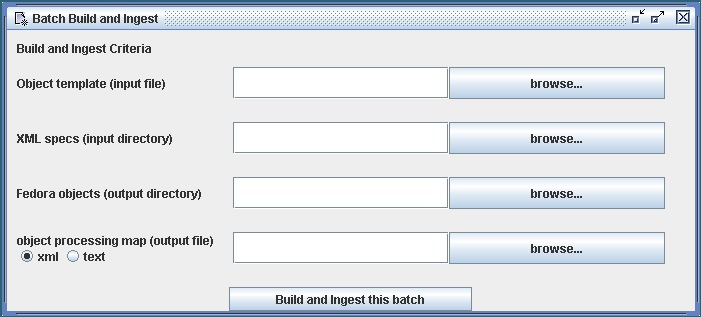
Then click the Build and Ingest this batch button to build the batch of Fedora METS XML documents and then ingest them into Fedora. The format of the built objects is determined by the format of the template.
A confirmation dialog will open requesting confirmation of the object template selected. Clicking Yes will continue the batch build. Clicking No or Cancel will return the user to the Batch Build and Ingest window.
A second (output-only) window will open to show progress. You can build and ingest multiple different batches before closing the Batch Build and Ingest window.
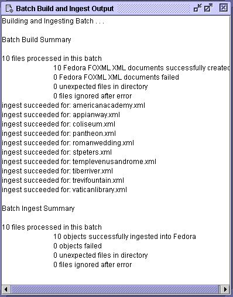
There is then no need to separately ingest the created batch.
No subdirectories or files are deleted by Fedora Administrator. Setup and cleanup of the files in the batch must be done by you using standard operating systems facilities.
Fedora Administrator does not itself validate on Batch Build, but batch ingest into Fedora does. The batch fails on the first individual object ingest failure.
Fedora will not ingest a METS file whose METS:xmldata elements are empty or contain non-tagged character data.
You can use files and subdirectories of directory client/demo/batch-demo, relative to your FEDORA_HOME environment variable. (When you create your own batches, the needed directories and files can be anywhere in the file space of the system on which you are running Fedora Administrator or command-line BatchTool.)
If you have ingested these objects before, either in this Build and Ingest Batch mode or in separate sequential Build Batch and Ingest Batch modes, you will first need to edit OBJIDs in the object-spec files, or to remove the corresponding objects from your Fedora repository.
Use file mets-template.xml for METS template (input file) if you want to create Fedora METS objects.
Use file foxml-template.xml for FOXML template (input file) if you want to create Fedora FOXML objects..
Use subdirectory object-specifics for XML specs (input directory); this is a directory holding (all and only) per-object data.
Use subdirectory objects for built objects (output directory); this is a directory to hold (all and only) Fedora object files built by Fedora Administrator.
Specify a file path of your choice for object processing map (output file); this is a file which maps object-specs through objects built and on to PIDs assigned. See the section on object processing maps, elsewhere in this documentation. Unlike separate Batch Build and Batch Ingest modes, the complete triple is reported in this Batch Build and Ingest mode.
Optionally select the output format for object processing map, either xml or text (xml is the default format).
The object-processing-map file has one of the following formats, depending on the choice of xml or text in Fedora Administrator. Batch Build processing results in an object processing map whose individual maps have only path2spec and path2object attributes or fields. Batch ingest processing results in an object processing map whose individual maps have only path2object and pid attributes or fields. Batch build and Ingest processing results in an object processing map whose individual maps have all three path2spec, path2object and pid attributes or fields.
<object-processing-map>
<map
path2spec="/mellon/dist/client/demo/batch-demo/object-specifics/americanacademy.xml"
path2object=" /mellon/dist/client/demo/batch-demo/objects/americanacademy.xml"
pid="demo:3010" />
. . .
<map
path2spec="/mellon/dist/client/demo/batch-demo/object-specifics/vaticanlibrary.xml"
path2object="/mellon/dist/client/demo/batch-demo/objects/vaticanlibrary.xml"
pid="demo:3019" />
</object-processing-map>
(field separator is tab; relative paths used for practical illustration)
object-specifics/americanacademy.xml objects/americanacademy.xml demo:3010
. . .
object-specifics/vaticanlibrary.xml objects/vaticanlibrary.xml demo:3019
Object-specifics are coded in XML files. These data include: object ID, label, and comment; datastream and object metadata and accompanying label; datastream URLs, titles, and labels. Prior to Fedora 2.1b, there was no formal batchMerge schema for object-specific files and the schema was implied based on the example object-specific files. The new batchMerge.xsd schema provides a more formal definition that conforms to the pre-Fedora 2.1b object-specific examples and also provides some new extensions for attributes introduced with FOXML. The new schema can be found at: http://www.fedora.info/definitions/1/0/api/batchMerge.xsd.
Where possible, attribute names on elements are the same as in the Fedora METS or FOXML schema, and so correspond to like-named attributes in the Fedora METS or FOXML template. How these map is described below and by running the demo and viewing the results for one of the objects.
Any individual substitution is optional. When absent as a substitution, the value in the template will be used for the resulting Fedora METS or FOXML object. (Demo template and object-specific contents are chosen instructively to highlight substitutions made.) Datastream URLs will generally be specific to an object; practice will show which other substitutions are generally made.
All non-METS and non-FOXML namespaces used in your own metadata must be declared, as in xmlns:uvalibadmin in the demo.
The metadata element is for backward compatibility with pre-Fedora 2.1b object-specific file formats where inline XML metadata was treated separately from other types of datastreams. It is recommended that users use the new extended datastream element for all types of datastreams. The metadata element may be deprecated in a future release of the batchMerge schema.
When working with a METS template object:
Datastream IDs here map to those found in the Fedora METS:fileGrp element (the nested, not the nesting, one). The associated xlink:href and xlink:title attributes are substituted into the Fedora METS:Flocat element, which is nested within that Fedora METS:fileGrp element.
Datastream labels substitute instead into METS:structMap.
When working with a FOXML template object:.
Datastream IDs here map to the ID attribute found in the Fedora foxml:datastream element. The associated xlink:href attribute maps to the REF attribute found in the Fedora foxml:contentLocation element. The xlink:title attribute is for backward compatibility. Both datastream LABEL and xlink:title attributes map to the LABEL attribute found in the Fedora foxml:datastreamVersion element. It is recommended that you use the LABEL attribute instead of the xlink:title attribute when referring to the label of a datastream.
Case matters in attribute and element names.
Fedora will retain as PIDs only OBJIDs whose prefixes are included in the fedora.fcfg file retainPids parameter (e.g., test, demo, etc.). Other OBJIDs will be replaced by Fedora-generated PIDs.
object-specs in a given batch should meet the structural requirements of that batch's template: same number and tagging of datastreams, same number and tagging of metadata elements. Since substitutions are optional, individual object-specs cannot have "missing" data: the resulting object simply retains the template's value. Neither can object-specs have "extra" data: the resulting object simply lacks the object-spec's data -- because the template isn't designed to use it. In either case, the batch goes on.
The following object-spec fragment from americanacademy.xml illustrates some of this.
<?xml version="1.0" encoding="utf-8"?> <input
xmlns:xsi="http://www.w3.org/2001/XMLSchema-instance" xmlns:xlink="http://www.w3.org/TR/xlink" xsi:schemaLocation="http://www.fedora.info/definitions/ http://www.fedora.info/definitions/1/0/api/batchMerge.xsd" xmlns="http://www.fedora.info/definitions/" OBJID="demo:3010" LABEL="American Academy"> <datastreams> . . . <datastream ID="RIGHTS1">
<!-- *** TESTING: SUBSTITUTING METADATA FOR RIGHTS1 *** -->
<xmlContent>
<uvalibadmin:admin xmlns:uvalibadmin="http://dl.lib.virginia.edu/bin/dtd/admin/admin.dtd">
<uvalibadmin:adminrights>
<uvalibadmin:policy>
<uvalibadmin:access>unrestricted</uvalibadmin:access>
<uvalibadmin:use>educational</uvalibadmin:use>
</uvalibadmin:policy>
</uvalibadmin:adminrights>
</uvalibadmin:admin>
</xmlContent>
</datastream> . . . other metadata datastreams . . . <datastream ID="DS1" xlink:href="http://www.fedora.info/demo/batch-demo/thumb/americanacademy.jpg" LABEL="*** TESTING: SUBSTITUTING LABEL FOR DS1 ***"/> <datastream ID="DS2" xlink:href="http://www.fedora.info/demo/batch-demo/medium/americanacademy.jpg" xlink:title="*** TESTING: SUBSTITUTING XLINK:TITLE FOR DS2 ***"/> <datastream ID="DS3" xlink:href="http://www.fedora.info/demo/batch-demo/high/americanacademy.jpg"/> <datastream ID="DS4" xlink:href="http://www.fedora.info/demo/batch-demo/very-high/americanacademy.jpg"/> </datastreams> </input>
Fedora Administrator already provides a progress report of each use of a batch tool, written to a GUI window, to provide user feedback. Additionally, this progress report is now written to a text file, to provide a permanent record.
[Note that this progress report is not especially suited and is not intended for further processing by another computer program. Use the "object processing map", a different output file already provided, for such machine processing.]
The progress report file is written to the same directory as the object processing map. The name of any instance of these new files includes the time when it is written, e.g., 20031203-123201-365.txt [The final group of numerals would serve to differentiate report files written, oddly but possibly, at the same second, by 2 instances of the GUI client running on the same machine.]
The following description tells what is recorded in this new file and how its directory is chosen in giving the location of the object processing map.
The batch tools are available through the Tools menu, under Batch, and serve to provide: Build Batch, Build and Ingest Batch, or Ingest Batch.
After selecting one of these tools, a dialog box opens for user input of tool parameters. This dialog box is titled "Batch Build", "Batch Build and Ingest", or "Batch Ingest", depending on which tool is chosen. For each tool, one of the required parameters is the path to the "object processing map" (an output file), which records the tool's processing in a form amendable to later input to another program. This path is specified in a usual file dialog, including its parent directory.
This is the parent directory, also, into which the new processing report file is written.
The contents of this new file is simply the contents of the respective output window of the GUI client, one of : "Batch Build Output", "Batch Build and Ingest Output", or "Batch Ingest Output".
The Batch Modify Utility is an application that enables the modification of objects in batch mode. It is designed for use by repository administrators and is available under the Tools menu of the Administrator GUI client. It can also be invoked as a command-line utility using either the fedora-modify.bat (Windowx) or fedora-modify.sh (unix) scripts located in the distribution client/bin directory.
The basic design of the utility is to process an xml input file containing modify directives and then process each directive in sequence using the methods of API-M. The format of the directives file is specified by an xml schema name batchModify.xsd. The schema is available in the local distribution in the tomcat ROOT webapp and is also available from the Fedora website at http://www.fedora.info/definitions/1/0/api/batchModify.xsd. Each modify directive mirrors the capability of the corresponding API-M directives.
The Batch Modify Utility is accessed through the Tools menu of the Administrator GUI client under the submenu heading of Batch/Modify Batch.
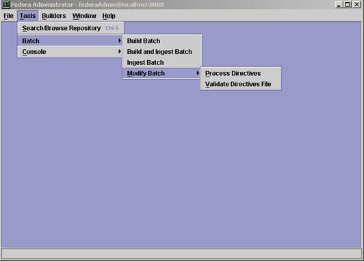
The Modify Batch menu contains two sub-items named Process Directives and Validate Directives File. The Process Directives menu item is used to begin processing a valid set of xml directives in a modify directives file. The Validate Directives File item is used to parse an existing batch modify directives file to insure that it conforms to the Fedora Batch Modify XML schema.
Selecting the Process Directives item will prompt for the location of the directives file.
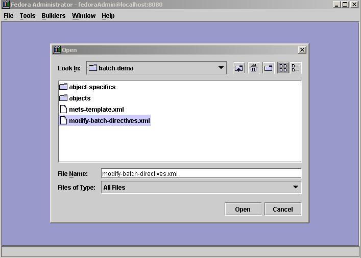
After selecting a directives file, you will be asked to confirm the choice.
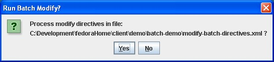
Upon clicking the yes button, the directives file will be processed and a log file generated that details the number of directives processed and any errors that may have occurred.
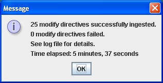
If there were any errors, you can peruse the log file to ascertain more information about what caused the directive to fail.
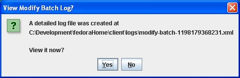
The log file consists of an xml file containing entries for each directive that was processed.
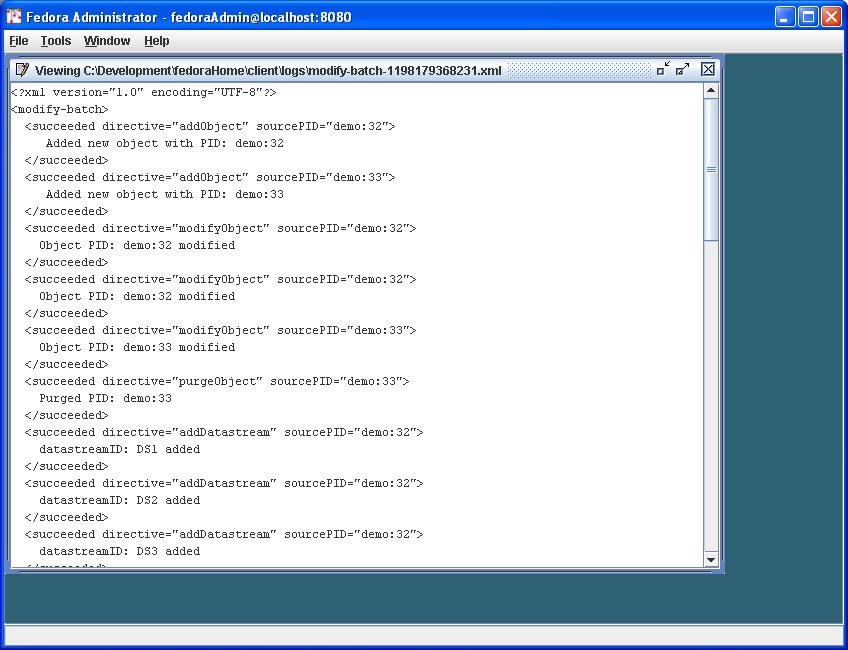
The Validate Directives menu item is used to verify that an existing directives file is valid before attempting to process the file. This can be useful when the directive files were created using a non-xml editor that was unable to validate the file as it was created. The steps for validating a directive file are similar to that for processing. First you are prompted for the location of the directives file to be processed.
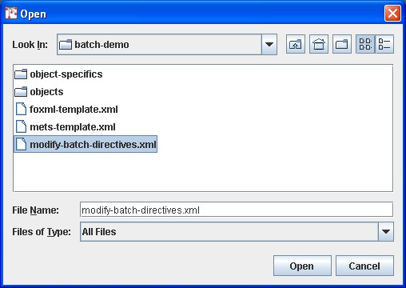
Confirming the file location initiates the parsing process and the results are displayed when parsing is completed.
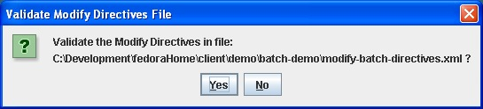
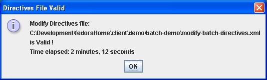
There is a sample batch modify directives file included in the distribution located in the dist/client/demo/batch-demo directory named modify-batch-directives.xml. This sample file creates a new object and then performs various additions, deletions, and modifications to the object's components through s series of directives. For reference the the sample directives file is included below.
<?xml version="1.0" encoding="utf-8"?>
<!-- ********************************************************************** -->
<!-- This is a sample modify directives file that performs a variety of -->
<!-- modfications on the datastreams and disseminators of two new demo -->
<!-- objects (demo:32 and demo:33) that the script will create. In general, -->
<!-- one should always validate a modify directives file against the -->
<!-- modifyBatch.xsd schema prior to processing to catch any syntax errors. -->
<!-- Processing will halt if the directives file is invalid and a log file -->
<!-- is generated summarizing the results of the batch. Refer to the xml -->
<!-- schema file (modifyBatch.xsd) for details on the syntax of the modify -->
<!-- file. -->
<!-- -->
<!-- This file uses behavior definition and behavior mechanism objects that -->
<!-- are included in the set of demo objects. The set of demo objects MUST -->
<!-- be ingested into the repository PRIOR to processing this directives -->
<!-- file. If the demo objects are not loaded, the last several directives -->
<!-- involving disseminators that use the demo objects will fail. -->
<!-- ********************************************************************** -->
< fbm:batchModify xmlns:fbm =" http://www.fedora.info/definitions/ " xmlns:xsi =" http://www.w3.org/2001/XMLSchema-instance " xsi:schemaLocation =" http://www.fedora.info/definitions/ http://www.fedora.info/definitions/1/0/api/batchModify.xsd ">
<!-- ****************************************************************** -->
<!-- Add a new empty object to the repository that has no datastreams -->
<!-- or disseminators with PID of demo:32. -->
<!-- -->
<!-- NOTE: By default each Fedora repository specifies several PID -->
<!-- namespaces (e.g. "demo")that will be retained at ingest by the -->
<!-- repository allowing ingested objects to retain the PID specified -->
<!-- at ingest time. This list of PID namespaces is configurable in -->
<!-- fedora.fcfg using the retainPids config parameter. In this example, -->
<!-- demo:32 is specified PID so the generated object will retain this -->
<!-- PID value after ingestion. Leaving the pid attribute empty -->
<!-- (i.e., "") will force the repository to assign a PID to the new -->
<!-- object using the namespace specified by the PidNamespace parameter -->
<!-- in the fedora.fcf config file. -->
<!-- -->
<!-- Required attributes on directive: -->
<!-- pid - PID of the object; leave blank if you want repository to -->
<!-- assign the pid. -->
<!-- label - label for the object -->
<!-- contentModel - content model of the object -->
<!-- logMessage - message to be written in audit trail record -->
<!-- ******************************************************************* -->
< fbm:addObject pid =" demo:32 " label =" Sample Object Used With Batch Modify Utility " contentModel =" Object " logMessage =" BatchModify - addObject "/>
<!-- ****************************************************************** -->
<!-- Add a second new empty object to the repository that has no -->
<!-- datastreams or disseminators with a PID of demo:33. -->
<!-- ******************************************************************* -->
< fbm:addObject pid =" demo:33 " label =" 2nd Sample Object Used With Batch Modify Utility " contentModel =" Object " logMessage =" BatchModify - addObject "/>
<!-- ****************************************************************** -->
<!-- Modify object demo:32 by changing the label on the object. -->
<!-- -->
<!-- Required attributes on directive: -->
<!-- pid - PID of the object -->
<!-- logMessage - message to be written in audit trail record -->
<!-- -->
<!-- Optional attributes on directive: -->
<!-- label - label for the object -->
<!-- state - state of the object -->
<!-- ******************************************************************* -->
< fbm:modifyObject pid =" demo:32 " label =" Object Label was changed " logMessage =" BatchModify - modifyObject "/>
<!-- ****************************************************************** -->
<!-- Modify object demo:33 by changing its state to deleted. -->
<!-- ******************************************************************* -->
< fbm:modifyObject pid =" demo:33 " state =" D " logMessage =" BatchModify - modifyObject "/>
<!-- ****************************************************************** -->
<!-- Purge object demo:33 that was just created and modified. -->
<!-- -->
<!-- Required attributes on directive: -->
<!-- pid - PID of the object to be purged -->
<!-- logMessage - message to be written in audit trail record -->
<!-- -->
<!-- Optional attributes on directive: -->
<!-- force - boolean indicating whether to purge the object if any -->
<!-- critical dependencies exist. A value of true will purge the object -->
<!-- regardless of any dependencies. A value of false will allow the -->
<!-- purge only if no dependencies exist. This parameter is currently -->
<!-- not implemented in the server. -->
<!-- ******************************************************************* -->
< fbm:purgeObject pid =" demo:33 " logMessage =" BatchModify - purgeObject "/>
<!-- ****************************************************************** -->
<!-- Add a new datastream to demo:32 object with ID of DS1. -->
<!-- -->
<!-- Note: A dsID of DS1 is assigned by the server since no dsID is -->
<!-- specified on the directive and this is the first datastream in -->
<!-- this object. -->
<!-- -->
<!-- -->
<!-- Required attributes on directive: -->
<!-- pid - PID of the object -->
<!-- dsLabel - label fo the datastream -->
<!-- dsMIME - MIME type of the datastream -->
<!-- logMessage - message to be written in audit trail record -->
<!-- dsState - state of the object -->
<!-- dsControlGroupType - control group type of the datastream -->
<!-- dsLocation - location of the datastream; for XMLMetadataDatastreams -->
<!-- dsLocation omit dsLocation or leave as blank. For all -->
<!-- other datastream types, it is required and must -->
<!-- denote the remote location of the datastream. -->
<!-- -->
<!-- Optional attributes on directive: -->
<!-- dsID - ID of the datastream; omit or leave as blank if you want -->
<!-- repository to assign datastream ID. -->
<!-- formatURI - URI identifying the format of the datastream -->
<!-- versionable - boolean indicating whether datastream is versionable -->
<!-- altIDs - space delimited string of alternated identifiers for the -->
<!-- datastream. This info is currently maintained in the -->
<!-- object, but not acted on. -->
<!-- ****************************************************************** -->
< fbm:addDatastream pid =" demo:32 " dsLabel =" Thorny's Coliseum thumbnail jpg image " dsMIME =" image/jpeg " dsLocation =" http://localhost:8080/demo/simple-image-demo/coliseum-thumb.jpg " dsControlGroupType =" E " dsState =" A " logMessage =" BatchModify - addDatastream "/>
<!-- ****************************************************************** -->
<!-- Add a 2nd datastream to demo:32 object. The new datastream will be -->
<!-- a medium resolution image and will be assigned a dsID of DS2 since -->
<!-- no dsID is specified and this is the second datastream for this -->
<!-- object. -->
<!-- ****************************************************************** -->
< fbm:addDatastream pid =" demo:32 " dsLabel =" Thorny's Coliseum medium jpg image " dsMIME =" image/jpeg " dsLocation =" http://localhost:8080/demo/simple-image-demo/coliseum-medium.jpg " dsControlGroupType =" E " dsState =" A " logMessage =" BatchModify - addDatastream "/>
<!-- ****************************************************************** -->
<!-- Add a 3rd datastream to demo:32 object. The new datastream will be -->
<!-- a high resolution image and will be assigned a dsID of DS3 since -->
<!-- no dsID is specified and this is the third datastream for this -->
<!-- object. -->
<!-- ****************************************************************** -->
< fbm:addDatastream pid =" demo:32 " dsLabel =" Thorny's Coliseum high jpg image " dsMIME =" image/jpeg " dsLocation =" http://localhost:8080/demo/simple-image-demo/coliseum-high.jpg " dsControlGroupType =" M " dsState =" A " logMessage =" BatchModify - addDatastream "/>
<!-- ****************************************************************** -->
<!-- Add a 4th datastream to demo:32 object. The new datastream will be -->
<!-- a very high resolution image and will be assigned a dsID of DS4 -->
<!-- since no dsID is specified and this is the fourth datastream for -->
<!-- this object. -->
<!-- ****************************************************************** -->
< fbm:addDatastream pid =" demo:32 " dsLabel =" Thorny's Coliseum veryhigh jpg image " dsMIME =" image/jpeg " dsLocation =" http://localhost:8080/demo/simple-image-demo/coliseum-veryhigh.jpg " dsControlGroupType =" M " dsState =" A " logMessage =" BatchModify - addDatastream "/>
<!-- ****************************************************************** -->
<!-- Add a 5th datastream to demo:32 object. The new datastream will be -->
<!-- a screen size image and will have dsID of SCREEN. This datastream -->
<!-- will also have values assigned for alternate IDs, formatURI, and -->
<!-- is declared not to be versionable. -->
<!-- ****************************************************************** -->
< fbm:addDatastream pid =" demo:32 " dsID =" SCREEN " altIDs =" AlternateID1 AlternateID2 " formatURI =" info:fedora/demo/content/JPEG# " versionable =" false " dsLabel =" Thorny's Coliseum screen size jpg image " dsMIME =" image/jpeg " dsLocation =" http://localhost:8080/demo/simple-image-demo/coliseum-high.jpg " dsControlGroupType =" E " dsState =" A " logMessage =" BatchModify - addDatastream "/>
<!-- ****************************************************************** -->
<!-- Add a 6th datastream to demo:32 object. The new datastream will be -->
<!-- a user-defined inline descriptive metadata datastream and will -->
<!-- have dsID of DESC. -->
<!-- ****************************************************************** -->
< fbm:addDatastream pid =" demo:32 " dsID =" DESC " dsLabel =" Descriptive metadata for Thorny's Coliseum screen size jpg image " dsMIME =" text/xml " dsControlGroupType =" X " dsState =" A " logMessage =" BatchModify - addDatastream ">
< fbm:xmlData >
< uvalibdesc:desc xmlns:uvalibdesc =" http://dl.lib.virginia.edu/bin/dtd/descmeta/descmeta.dtd ">
< uvalibdesc:time >
< uvalibdesc:date type =" created " certainty =" ca. " era =" bc "> 1st century </ uvalibdesc:date >
</ uvalibdesc:time >
< uvalibdesc:identifier scheme =" URN "> uva-lib:2 </ uvalibdesc:identifier >
< uvalibdesc:rights type =" use "> unrestricted </ uvalibdesc:rights >
< uvalibdesc:subject scheme =" other " othertype =" keyword "> Roman Empire </ uvalibdesc:subject >
< uvalibdesc:subject scheme =" other " othertype =" keyword "> Roman </ uvalibdesc:subject >
< uvalibdesc:subject scheme =" other " othertype =" keyword "> Vespaciano </ uvalibdesc:subject >
< uvalibdesc:subject scheme =" other " othertype =" keyword "> Amphitheatrum Flavium </ uvalibdesc:subject >
< uvalibdesc:title type =" main "> Coliseum -- Rome, Italy </ uvalibdesc:title >
< uvalibdesc:form > architecture </ uvalibdesc:form >
< uvalibdesc:mediatype type =" image ">
< uvalibdesc:form > digital </ uvalibdesc:form >
</ uvalibdesc:mediatype >
< uvalibdesc:agent role =" publisher "> Alderman Library </ uvalibdesc:agent >
< uvalibdesc:covspace >
< uvalibdesc:geometry >
< uvalibdesc:point >
< uvalibdesc:lat > 41.54N </ uvalibdesc:lat >
< uvalibdesc:long > 12.27E </ uvalibdesc:long >
</ uvalibdesc:point >
</ uvalibdesc:geometry >
</ uvalibdesc:covspace >
< uvalibdesc:covtime >
< uvalibdesc:date era =" bc "> 72 </ uvalibdesc:date >
< uvalibdesc:date era =" bc "> 80 </ uvalibdesc:date >
</ uvalibdesc:covtime >
< uvalibdesc:culture > Roman </ uvalibdesc:culture >
< uvalibdesc:place type =" original ">
< uvalibdesc:geogname > Italy, Rome </ uvalibdesc:geogname >
</ uvalibdesc:place >
</ uvalibdesc:desc >
</ fbm:xmlData >
</ fbm:addDatastream >
<!-- ****************************************************************** -->
<!-- Add a 7th datastream to demo:32 object. The new datastream will be -->
<!-- duplicate of the screen size image that will be deleted later in -->
<!-- this set of directives. It will have a dsID of SCREENDUP. -->
<!-- ****************************************************************** -->
< fbm:addDatastream pid =" demo:32 " dsID =" SCREENDUP " dsLabel =" Thorny's Coliseum screen size jpg image " dsMIME =" image/jpeg " dsLocation =" http://localhost:8080/demo/simple-image-demo/coliseum-high.jpg " dsControlGroupType =" R " dsState =" A " logMessage =" BatchModify - addDatastream "/>
<!-- ****************************************************************** -->
<!-- Modify datastream DS1 of demo:5 object by changing its label. -->
<!-- -->
<!-- NOTE: Optional attributes that are omitted indicate that that -->
<!-- attribute is to remain uncahnged and the original value of of the -->
<!-- datastream attribute in the object will be preserved. Optional -->
<!-- attributes that are set to the empty string indicate that the -->
<!-- atrribute value will be blanked out in the datastream. -->
<!-- In this example the datastream location and state attributes are -->
<!-- not modified. -->
<!-- -->
<!-- Required attributes on directive: -->
<!-- pid - PID of the object -->
<!-- dsID - ID of the datastream -->
<!-- dsControlGroupType - control group type of the datastream -->
<!-- logMessage - message to be written in audit trail record -->
<!-- -->
<!-- Optional attributes on directive: -->
<!-- dsLabel - label fo the datastream -->
<!-- dsState - state of the object -->
<!-- dsLocation - location of the datastream -->
<!-- dsMIME - MIME type of the datastream -->
<!-- formatURI - URI identifying the format of the datastream -->
<!-- versionable - boolean indicating whether datastream is versionable -->
<!-- altIDs - space delimited string of alternated identifiers for the -->
<!-- datastream. This info is currently maintained in the -->
<!-- object, but not acted on. -->
<!-- force - boolean indicating whether to purge the object if any -->
<!-- critical dependencies exist. A value of true will purge -->
<!-- the object regardless of any dependencies. A value of -->
<!-- false will allow the purge only if no dependencies exist. -->
<!-- ****************************************************************** -->
< fbm:modifyDatastream pid =" demo:32 " dsID =" DS1 " dsControlGroupType =" E " dsLabel =" New label for datastream DS1 " logMessage =" BatchModify - modifyDatastream "/>
<!-- ****************************************************************** -->
<!-- Modify datastream SCREEN of demo:32 object by changing its label -->
<!-- and datastream location so that it points to the same content as -->
<!-- that of datastream DS3 which is a high-res image. -->
<!-- -->
<!-- NOTE: Optional attributes that are omitted indicate that that -->
<!-- attribute is to remain uncahnged and the original value of of the -->
<!-- datastream attribute in the object will be preserved. Optional -->
<!-- attributes that are set to the empty string indicate that the -->
<!-- atrribute value will be blanked out in the datastream. -->
<!-- ****************************************************************** -->
< fbm:modifyDatastream pid =" demo:32 " dsID =" SCREEN " dsControlGroupType =" E " dsLabel =" Changed label for datastream SCREEN " dsLocation =" http://localhost:8080/fedora/get/demo:5/DS4 " logMessage =" BatchModify - modifyDatastream "/>
<!-- ****************************************************************** -->
<!-- Modify datastream DC of demo:32 object by changing its label and -->
<!-- its xml content so that its content is replaced by the block of -->
<!-- xml below. -->
<!-- ****************************************************************** -->
< fbm:modifyDatastream pid =" demo:32 " dsID =" DC " dsControlGroupType =" X " dsLabel =" New label for DC datastream " logMessage =" BatchModify - modifyDatastream ">
< fbm:xmlData >
< oai_dc:dc xmlns:oai_dc =" http://www.openarchives.org/OAI/2.0/oai_dc/ " xmlns:dc =" http://purl.org/dc/elements/1.1/ " xmlns:my =" http//foo.bar.none ">
< dc:title > Coliseum in Rome </ dc:title >
< dc:creator > Thornton Staples </ dc:creator >
< dc:subject > Architecture, Roman </ dc:subject >
< dc:description > Image of Coliseum in Rome </ dc:description >
< dc:publisher > University of Virginia Library </ dc:publisher >
< dc:format > image/jpeg </ dc:format >
< dc:identifier > demo:5 </ dc:identifier >
< my:this > some text </ my:this >
< my:that > some more text </ my:that >
< my:other > even more text </ my:other >
</ oai_dc:dc >
</ fbm:xmlData >
</ fbm:modifyDatastream >
<!-- ****************************************************************** -->
<!-- Modify datastream DESC of demo:32 object by changing its label. -->
<!-- Also change its formatURI and set versionable to false. -->
<!-- ****************************************************************** -->
< fbm:modifyDatastream pid =" demo:32 " dsID =" DESC " dsControlGroupType =" X " dsLabel =" New label for DC datastream " formatURI =" info:fedora/new/formatURI " versionable =" false " logMessage =" BatchModify - modifyDatastream "/>
<!-- ****************************************************************** -->
<!-- Purge datastream SCREENDUP from object demo:32 -->
<!-- -->
<!-- Required attributes on directive: -->
<!-- pid - PID of the object to be purged -->
<!-- logMessage - message to be written in audit trail record -->
<!-- -->
<!-- Optional attributes on directive: -->
<!-- force - boolean indicating whether to purge the object if any -->
<!-- critical dependencies exist. A value of true will purge -->
<!-- the object regardless of any dependencies. A value of -->
<!-- false will allow the purge only if no dependencies exist. -->
<!-- purge only if no dependencies exist. This parameter is -->
<!-- currently not implemented in the server. -->
<!-- ****************************************************************** -->
< fbm:purgeDatastream pid =" demo:32 " dsID =" SCREENDUP " logMessage =" BatchModify - purgeDatastream "/>
<!-- ****************************************************************** -->
<!-- Change the state of datastream DS1 to deleted -->
<!-- -->
<!-- Required attributes on directive: -->
<!-- pid - PID of the object -->
<!-- dsID - ID of the datastream -->
<!-- dsState - new value for state of the datastream -->
<!-- logMessage - message to be written in audit trail record -->
<!-- ****************************************************************** -->
< fbm:setDatastreamState pid =" demo:32 " dsID =" DS1 " dsState =" D " logMessage =" BatchModify - setDatastreamState "/>
<!-- ****************************************************************** -->
<!-- Change the state of datastream DESC to inactive -->
<!-- ****************************************************************** -->
< fbm:setDatastreamState pid =" demo:32 " dsID =" DESC " dsState =" I " logMessage =" BatchModify - setDatastreamState "/>
<!-- ****************************************************************** -->
<!-- Add a new disseminator for object demo:32 using the UVA Simple -->
<!-- Image Behavior Definition (demo:1) and Fedora HTTP Getter Service -->
<!-- (demo:2). Binding Key names defined for this mechanism include: -->
<!-- THUMBRES_IMAG, MEDRES_IMG, HIGHRES_IMG, and VERYHIGHRES_IMG. -->
<!-- -->
<!-- Required attributes on directive: -->
<!-- pid - PID of the object -->
<!-- bDefPid - PID of the associated behavior definition object -->
<!-- bMechPid - PID of the associated behavior mechanism object -->
<!-- dissLabel - label of the disseminator -->
<!-- logMessage - message to be written in audit trail record -->
<!-- dissState - state of the disseminator -->
<!-- -->
<!-- -->
<!-- Sub-elements on directive: -->
<!-- addDatastreamBinding - specifies datastream binding for the -->
<!-- disseminator -->
<!-- ****************************************************************** -->
< fbm:addDisseminator pid =" demo:32 " bDefPid =" demo:1 " bMechPid =" demo:2 " dissLabel =" HTTP Getter Image Disseminator " dissState =" A " logMessage =" BatchModify - addDisseminator ">
< fbm:addDatastreamBinding dsBindKeyName =" THUMBRES_IMG " dsID =" DS1 " dsBindLabel =""/>
< fbm:addDatastreamBinding dsBindKeyName =" MEDRES_IMG " dsID =" DS2 " dsBindLabel =""/>
< fbm:addDatastreamBinding dsBindKeyName =" HIGHRES_IMG " dsID =" DS3 " dsBindLabel =""/>
< fbm:addDatastreamBinding dsBindKeyName =" VERYHIGHRES_IMG " dsID =" DS4 " dsBindLabel =""/>
</ fbm:addDisseminator >
<!-- ****************************************************************** -->
<!-- Add a second disseminator to the object demo:32 using the Image -->
<!-- Manipulation Behavior Definition (demo:27) and the Image -->
<!-- Manipulation service (demo:28). The mechanism specifies a single -->
<!-- Binding Key name of url. -->
<!-- ****************************************************************** -->
< fbm:addDisseminator pid =" demo:32 " bDefPid =" demo:27 " bMechPid =" demo:28 " dissLabel =" Image Manipulation Disseminator " dissState =" A " logMessage =" BatchModify - addDisseminator ">
< fbm:addDatastreamBinding dsBindKeyName =" url " dsID =" SCREEN " dsBindLabel =""/>
</ fbm:addDisseminator >
<!-- ****************************************************************** -->
<!-- Modify the first disseminator by changing its label and also the -->
<!-- label for its associated behavior definition label. Also remove -->
<!-- the datastream binding for DS3 and replace it with a new binding -->
<!-- that maps to dsID SCREEN for the high resolution image. -->
<!-- -->
<!-- NOTE: Optional attributes that are omitted indicate that that -->
<!-- attribute is to remain uncahnged and the original value of of the -->
<!-- datastream attribute in the object will be preserved. Optional -->
<!-- attributes that are set to the empty string indicate that the -->
<!-- atrribute value will be blanked out in the datastream. -->
<!-- -->
<!-- Required attributes on directive: -->
<!-- pid - PID of the object -->
<!-- dissID - disseminator ID -->
<!-- bMechPid - PID of the associated behavior mechanism object -->
<!-- logMessage - message to be written in audit trail record -->
<!-- -->
<!-- Optional attributes on directive: -->
<!-- dissLabel - label of the disseminator -->
<!-- dissState - state of the disseminator -->
<!-- force - boolean indicating whether to purge the object if any -->
<!-- critical dependencies exist. A value of true will purge -->
<!-- the object regardless of any dependencies. A value of -->
<!-- false will allow the purge only if no dependencies exist. -->
<!-- -->
<!-- Sub-elements on directive: -->
<!-- addDatastreamBinding - specifies datastream binding for the -->
<!-- disseminator -->
<!-- removeDatastreamBinding - specifies datastream binding for the -->
<!-- disseminator -->
<!-- ****************************************************************** -->
< fbm:modifyDisseminator pid =" demo:32 " dissID =" DISS1 " bMechPid =" demo:2 " dissLabel =" changed DISS label " dissState =" A " logMessage =" BatchModify - modifyDisseminator ">
< fbm:removeDatastreamBinding dsID =" DS3 "/>
< fbm:addDatastreamBinding dsBindKeyName =" HIGHRES_IMG " dsID =" SCREEN " dsBindLabel =" Label for New Binding "/>
</ fbm:modifyDisseminator >
<!-- ****************************************************************** -->
<!-- Modify the second disseminator by changing the label of its -->
<!-- associated behavior mechanism. Also remove the datastream binding -->
<!-- for SCREEN and replace it back with DS3. -->
<!-- ****************************************************************** -->
< fbm:modifyDisseminator pid =" demo:32 " dissID =" DISS2 " bMechPid =" demo:28 " dissState =" A " logMessage =" BatchModify - modifyDisseminator ">
< fbm:removeDatastreamBinding dsID =" SCREEN "/>
< fbm:addDatastreamBinding dsBindKeyName =" url " dsID =" DS3 " dsBindLabel =" Label for New Binding "/>
</ fbm:modifyDisseminator >
<!-- ****************************************************************** -->
<!-- Change the state of disseminator DISS2 to deleted -->
<!-- -->
<!-- Required attributes on directive: -->
<!-- pid - PID of the object -->
<!-- dissID - ID of disseminator -->
<!-- dissState - new value for state of the disseminator -->
<!-- ****************************************************************** -->
< fbm:setDisseminatorState pid =" demo:32 " dissID =" DISS2 " dissState =" D " logMessage =" BatchModify - setDisseminatorState "/>
</ fbm:batchModify >
The Modify Batch utility can also be run from the command line using the fedora-modify.bat (Windows) or the fedora-modify.sh (unix) scripts. These are located in the distribution in the dist/client/bin directory. Arguments for these scripts mirror those required in the interactive GUI interface.
fedora-modify.batfedora-modify.sh<</div>
Usage: fedora-modify? host port username password directives-filepath log-filepath validate-only-option
Where

The options under the Console submenu give developers direct access to the methods in the Fedora APIs and to the Stdout/Stderr window. In this way, development tools calling API methods can be more efficiently tested.
These console windows are not intended for casual users or repository administrators, therefore they contain no guiding text to assist users in their function. Developers should carefully read the Fedora Technical Specification to understand the parameters required for each method in the Fedora APIs.
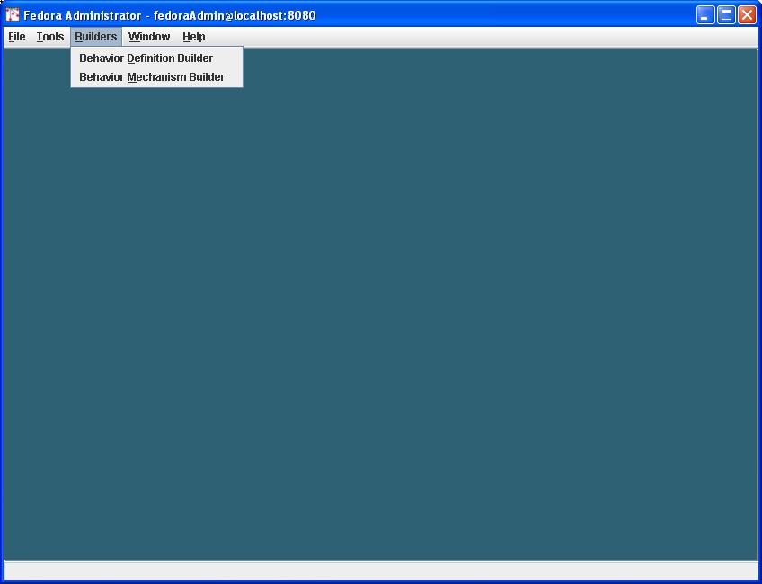
The Builders submenu gives users access to the Behavior Definition Builder and the Behavior Definition Builder. These WSDL objects are of such complex structure that it was necessary to create a wizard-like tool to enable users to construct custom Behavior Definitions and Behavior Mechanisms.
The complexity of the task requires that extensive help be available within the Fedora Administrator interface, so on every pane of these builders, users will find a Help button. Clicking this button, opens a help screen that guides the user through the data on that pane.

The Window menu contains standard commands for managing multiple panes open in the Fedora Administrator window. These include:
Cascade
Tile
Minimize All
Restore All
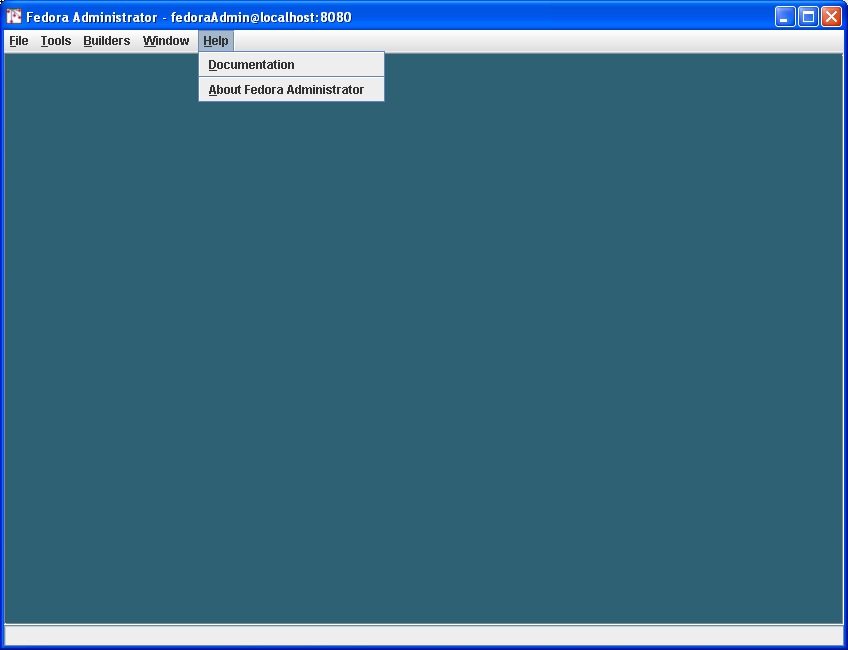
The help menu has two options:
Documentation: which gives users the URL to the online documentation for Fedora.
About Fedora Administrator: which provides version information, and copyright and licensing notices.
This manual's focus is on practical use of the Fedora Administrator Tool. For further discussion on the theory behind digital object construction, please see the Digital Object Construction manual.